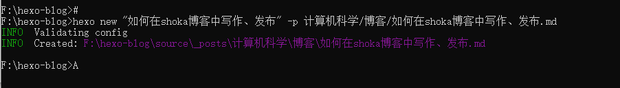
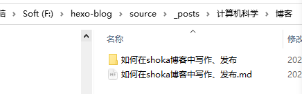
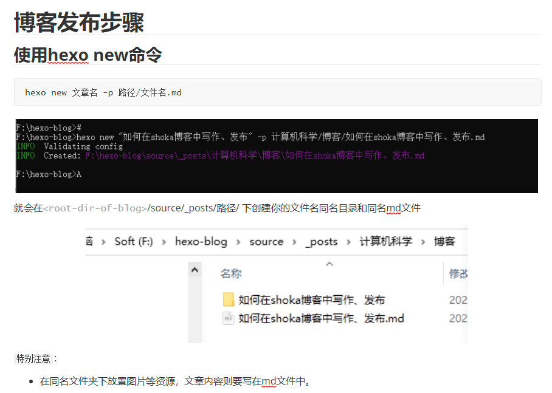

# 博客发布步骤
首先，我们发布博客需要 想一想是否得在某个大分类-小分类下 ，我这里由于提前想好以后：
大分类是 —— 计算机科学
中分类是 —— 博客
小分类是 —— 博客的食用方法
在这下面才有我的这篇 如何在shoka博客中写作、发布 文章
# 在指定路径下创建文章
hexo new 文章名 -p 路径/文件名.md

就会在 <root-dir-of-blog>/source/_posts/ 路径 / 下创建你的文件名同名目录和同名 md 文件

特别注意 ：
- 在同名文件夹下放置图片等资源，文章内容则要写在 md 文件中。
# 书写博客内容

# 平常代码块书写
其中，讲讲 shoka 中程序代码块的书写，以下内容为 md 文件中格式：
[language] [title] [url] [link text] [mark] [command]
java 命令代码块在 md 文件中的书写：
注意，[language] 前面和代码内容结尾后面都有三个点哦，这个点是
键盘左上角，ESC下面那个点！
```java 博客代码块 https://kiyomijin.github.io 参考链接 | |
... | |
Scanner in = new Scanner (System.in); | |
// 输入 Scan 之后，按下键盘 Alt + “/” 键，Eclipse 下自动补全。 | |
System.out.println (in.nextLine ()); | |
System.out.println ("Hello" + "world."); | |
``` |
效果如下：
import java.util.Scanner; | |
... | |
Scanner in = new Scanner (System.in); | |
// 输入 Scan 之后，按下键盘 Alt + “/” 键，Eclipse 下自动补全。 | |
System.out.println (in.nextLine ()); | |
System.out.println ("Hello" + "world."); |
bash 命令代码块在 md 文件中的书写：
- 如果没有 url、link text、mark 等的修饰的话，就不用书写，书写想要的字段就行
- command 命令给第 1、9-10 行标注了
[root@localhost] $的前缀解释，接着再给第 4-6 行的命令标注了[admin@remotehost] #的前缀解释
```bash 命令行提示符 command:("[root@localhost] $":1,9-10||"[admin@remotehost] #":4-6) | |
pwd | |
/usr/home/chris/bin | |
ls -la | |
total 2 | |
drwxr-xr-x 2 chris chris 11 Jan 10 16:48 . | |
drwxr--r-x 45 chris chris 92 Feb 14 11:10 .. | |
-rwxr-xr-x 1 chris chris 444 Aug 25 2013 backup | |
-rwxr-xr-x 1 chris chris 642 Jan 17 14:42 deploy | |
git add -A | |
git commit -m "update" | |
git push | |
``` |
效果如下：
pwd | ||
/usr/home/chris/bin | ||
ls -la | ||
total 2 | ||
drwxr-xr-x 2 chris chris 11 Jan 10 16:48 . | ||
drwxr--r-x 45 chris chris 92 Feb 14 11:10 .. | ||
-rwxr-xr-x 1 chris chris 444 Aug 25 2013 backup | ||
-rwxr-xr-x 1 chris chris 642 Jan 17 14:42 deploy | ||
git add -A | ||
git commit -m "update" | ||
git push |
# note 提示块
:::default
默认默认
:::
:::primary
基本基本
:::
:::info
提示提示
:::
:::success
成功成功
:::
:::warning
警告警告
:::
:::danger
危险危险
:::
:::danger no-icon
危险危险
:::
默认默认
基本基本
提示提示
成功成功
警告警告
危险危险
# emoji 绘文字
本功能基于 markdown-it-emoji ，所有标签参考戳此
:kissing_heart: | |
:ring: | |
:notes: |
😘
💍
🎶
# 文字特效
本功能基于 markdown-it-ins 、 markdown-it-bracketed-spans 和 markdown-it-attrs
本主题风格颜色通用样式：default、primary、success、info、warning、danger
注意，在 ++、~~ 或 == 号和汉字的中间
不能出现空格哦，否则无法正常显示！
++下划线++ | |
++波浪线++{.wavy} | |
++着重点++{.dot} | |
++紫色下划线++{.primary} | |
++绿色波浪线++{.wavy .success} | |
++黄色着重点++{.dot .warning} | |
~~删除线~~ | |
~~红色删除线~~{.danger} | |
==荧光高亮== | |
[赤橙黄绿青蓝紫]{.rainbow} | |
[红色]{.red} | |
[粉色]{.pink} | |
[橙色]{.orange} | |
[黄色]{.yellow} | |
[绿色]{.green} | |
[靛青]{.aqua} | |
[蓝色]{.blue} | |
[紫色]{.purple} | |
[灰色]{.grey} | |
快捷键 [Ctrl]{.kbd} + [C]{.kbd .red} | |
H~2~0 | |
29^th^ |
效果如下：
下划线
波浪线
着重点
紫色下划线
绿色波浪线
黄色着重点删除线红色删除线
荧光高亮
赤橙黄绿青蓝紫
红色
粉色
橙色
黄色
绿色
靛青
蓝色
紫色
灰色
快捷键 Ctrl + C
H20
29th
# collapse 折叠块
能基于 markdown-it-container
标签为：
开始行 +++[风格颜色] [标题文字]
结束行 +++
+++ 默认默认 这里是一段文字 | |
++下划线++ | |
+++ | |
+++primary 紫色 | |
:::info | |
参考信息 | |
::: | |
- 第一行 | |
- 第二行 | |
+++ | |
+++info 蓝色 | |
;;;id3 卡片 1 | |
这里是卡片 1 的内容 | |
;;; | |
;;;id3 卡片 2 | |
这里是卡片 2 的内容 | |
;;; | |
+++ | |
+++success 绿色 | |
<!--swig0--> | |
+++ | |
+++warning 黄色 | |
!! 警告警告警告警告警告！！{.bulr} | |
[label]{.label .success} | |
+++ | |
+++danger 红色 | |
[danger]{.label .danger} | |
+++ |
默认默认 这里是一段文字
下划线
紫色
参考信息
- 第一行
- 第二行
蓝色
这里是卡片 1 的内容
这里是卡片 2 的内容
绿色
https://kiyomijin.github.io
黄色
警告警告警告警告警告
label
红色
danger
# 发布博客
当你文章写完了，想发布到博客上面，先要把文章部署到 github 上面，然后打开你的博客，博客就会读取 github 仓库的内容了。
具体命令如下：
hexo clean | |
hexo g -d | |
# 逐步输入以上两条指令，执行完再输入下一条 | |
# 或者一次性输入两条也是可以的，但新手还不建议一次性输入，前期部署可能有时候容易出错 | |
hexo clean && hexo g && hexo d | |
# 部署完了看一下窗口没有出现报错就可以去博客刷新一下内容了，一般需要几分钟才更新内容 |